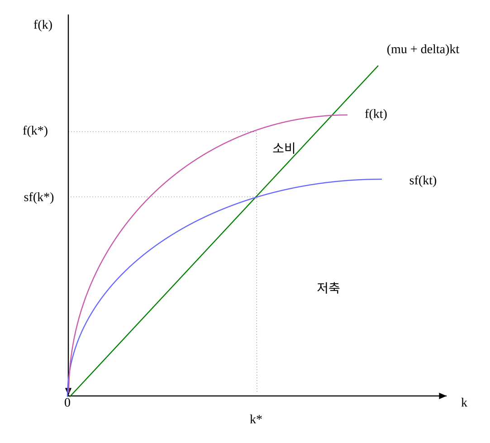
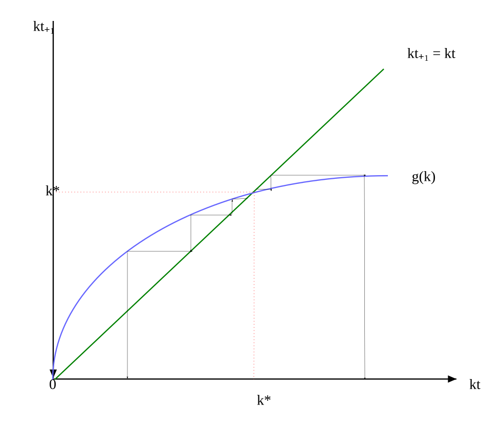
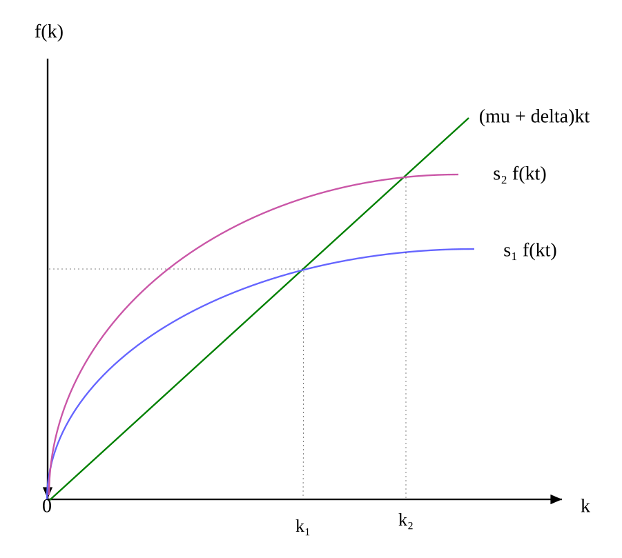
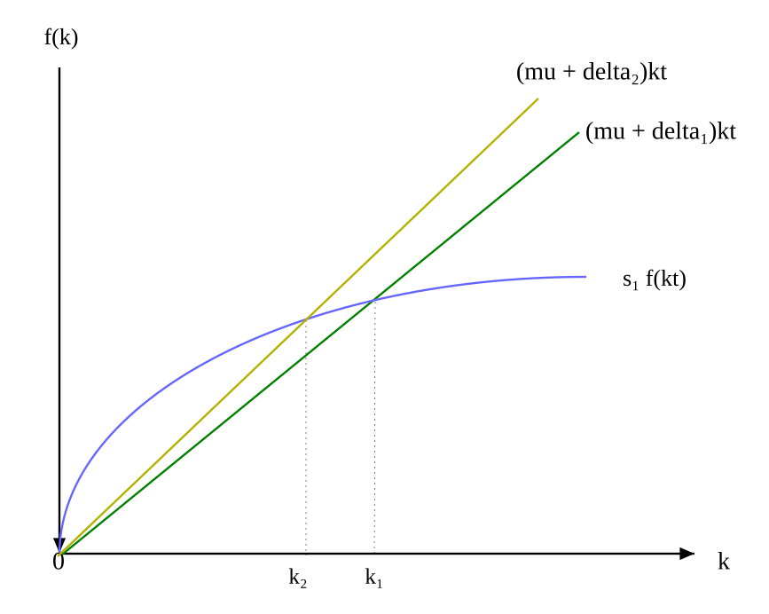
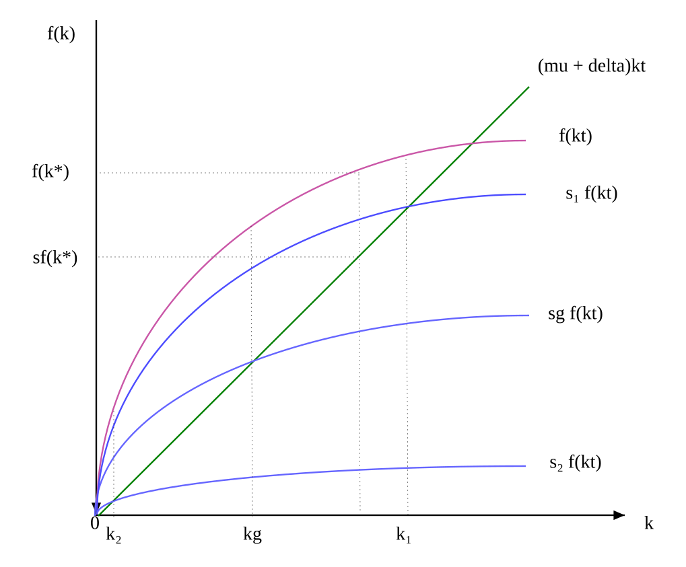

ㅇ 총생산함수는 자본과 노동으로 이루어진 신고전학파 생산함수를 따른다.[69]
\(Y_{t} \,=\,F(K_{t} ,\,L_{t} )\)
\(Y_{t}\) : t기에 최종재화의 1국 총생산량
\(K_{t}\) : t기의 자본재(capital stock)[70]
\(L_{t}\) : t기의 노동량[71]
생산에는 두 요소 모두 필요하다.
F(K, 0) = F(0, L) = 0
- F는 연속함수이며 2차 미분가능
- 자본과 노동의 한계생산물은 양
\(\frac{\partial F(K,\,L)}{\partial K} \,>\,0\), \(\frac{\partial F(K,\,L)}{\partial L} \,>\,0\)
- 자본과 노동의 한계생산물은 체감
\(\frac{\partial^{2} F(K,\,L)}{\partial K^{2}} \,<\,0\), \(\frac{\partial^{2} F(K,\,L)}{\partial L^{2}} \,<\,0\)
F는 규모의 보수불변, 즉 1차 동차함수
\(F( \lambda K,\, \lambda L)\,=\, \lambda F(K,\,L)\)
F는 inada 조건을 만족[72]
\(\lim\limits_{\scriptscriptstyle {K \to \infty}} \frac{\partial F(K,\,L)}{\partial K} \,=\,0\), \(\lim\limits_{\scriptscriptstyle {L \to \infty}} \frac{\partial F(K,\,L)}{\partial L} \,=\,0\)
\(\lim\limits_{\scriptscriptstyle {K \to 0}} \frac{\partial F(K,\,L)}{\partial K} \,=\, \infty\), \(\lim\limits_{\scriptscriptstyle {L \to 0}} \frac{\partial F(K,\,L)}{\partial L} \,=\, \infty\)
ㅇ 수출, 수입을 고려 않는 폐쇄경제 가정
생산물은 소비와 투자로 사용된다.[73]
\(Y_{t} \,=\,C_{t} \,+\,I_{t}\)
ㅇ 생산물의 일부분은 일정비율로 저축된다.[74] 폐쇄경제에서 저축은 전액 투자로 활용되므로
\(S_{t} \,=\,I_{t} \,=\,sY_{t}\), \(0\,<\,s\,<\,1\)
ㅇ 자본축적은 투자에 의해서 이루어진다. 자본은 매년 일정비율(\(\delta\)) 감가상각된다.
\(K_{t+1} \,=\,(1- \delta )K_{t} \,+\,I_{t} \,=\,(1- \delta )K_{t} \,+\,sY_{t} \,=\,(1- \delta )K_{t} \,+\,sF(K_{t} ,\,L_{t} )\,\).............①
ㅇ 노동력, 인구는 매년 일정비율(\(\mu\))만큼 증가한다.
\(L_{t+1} \,=\,(1+ \mu )L_{t}\)
①을 \(L_{t+1}\)로 나누고 F가 규모의 보수불변을 이용하면
\(\, \frac{K_{t+1}}{L_{t+1}} \,=\,(1- \delta ) \frac{K_{t}}{L_{t+1}} \,+\, \frac{sL_{t}}{L_{t+1}} F( \frac{K_{t}}{L_{t}} ,\,1)\)
\(\,=\, \frac{1- \delta }{1+ \mu } \frac{K_{t}}{L_{t}} \,+\, \frac{s}{1+ \mu } F( \frac{K_{t}}{L_{t}} ,\,1)\)..............②
\(\, \frac{K_{t}}{L_{t}} \,=\,k_{t}\) (두당 자본), \(\,F( \frac{K_{t}}{L_{t}} ,\,1)\,=\,f(k_{t} )\) (두당 생산물)라 하면 ②는
\(\,k_{t+1} \,=\, \frac{1- \delta }{1+ \mu } k_{t} \,+\, \frac{s}{1+ \mu } f(k_{t} )\,=\,g(k_{t} )\)
이를 Solow 모형의 기본운동법칙(fundamental law of motion)이라 부른다.
이는 비선형 차분방정식이다.
균형에서 \(k_{t+1} \,=\,k_{t} \,=\,k*\)이므로
\(\,k*\,=\, \frac{1- \delta }{1+ \mu } k*\,+\, \frac{s}{1+ \mu } f(k*)\,\)
⇒ \(\, \frac{\mu \,+ \delta }{1+ \mu } k*\,=\, \frac{s}{1+ \mu } f(k*)\,\)
⇒ \(\, \frac{\mu \,+ \delta }{s} \,=\,\frac{f(k*)}{k*}\)
⇒ \(\, {( \mu \,+ \delta )k*} \,=\, {sf(k*)}\)
즉 투자는 감가상각으로 마모되는 자본량과 인구증가로 희석되는 자본량을 충당하기에 필요한 만큼 이루어져야 한다는 의미.[75]
이를 그림으로 표시하면 다음과 같다. 두당 총생산에서 두당 저축을 뺀 금액이 두당 소비다.

\(\, \frac{\mu \,+ \delta }{s} \,=\,\frac{f(k*)}{k*}\)를 만족하는 \(k*\)가 존재한다. 또한 해는 유일하다.
(증명)
이나다 조건에 따라 \(\lim\limits_{k \to 0} {f'(k)\,=\, \infty }\), \(\lim\limits_{k \to \infty } {f ' (k)\,=\,0}\)
\(\lim\limits_{k \to 0} {\frac{f(k)}{k} \,=\, \lim\limits_{k \to 0} {\frac{f'(k)}{1} \,=\, \infty }}\), \(\lim\limits_{k \to \infty } {\frac{f(k)}{k} \,=\, \lim\limits_{k \to \infty } {\frac{f ' (k)}{1} \,=\,0}}\), (∵ 로피탈의 정리)
\(\; \frac{f(k)}{k}\)는 (\(0,\, \infty\))에서 연속이고, \(\, \frac{\mu \,+ \delta }{s} \,\)는 (\(0,\, \infty\)) 사이에 있으므로 중간값 정리에 따라 \(\, \frac{\mu \,+ \delta }{s} \,=\,\frac{f(k*)}{k*}\)를 만족하는 \(k*\)가 존재한다.
\(f(k)\)는 강오목함수이므로 모든 k에서 \(f(k)\,>\,f(0)\,+\,kf'(k)\)..........[76]
⇒ \(f(k)\,>\,kf ' (k)\), (∵f(0) = 0).............[77]
∴ \(\frac{\partial \left( \frac{f(k)}{k} \right)}{\partial k} \,=\, \frac{f'(k)k\,-\,f(k)}{k^{2}} \,<\,0\)
즉 \(\frac{f(k)}{k}\)는 단조감소함수. 따라서 \(\, \frac{\mu \,+ \delta }{s} \,=\,\frac{f(k*)}{k*}\)를 만족시키는 해는 유일하다.
Q.E.D.
\(f(k)\,>\,kf ' (k)\)
⇒ \(\frac{sf(k)}{k} \,>\,sf ' (k)\)
⇒ \(\mu \,+\, \delta \,>\,sf ' (k*)\), (∵ \(\, \frac{\mu \,+ \delta }{s} \,=\,\frac{f(k*)}{k*}\))
⇒ \(\frac{\mu \,+\, \delta }{1+ \mu } \,>\, \frac{sf ' (k*)}{1+ \mu }\)
한편 \(\,g(k_{t} )\,=\, \frac{1- \delta }{1+ \mu } k_{t} \,+\, \frac{s}{1+ \mu } f(k_{t} )\,\)에서
\(\, \frac{\partial g(k_{t} )}{\partial k_{t}} \,=\, \frac{1- \delta }{1+ \mu } \,+\, \frac{s}{1+ \mu } f ' (k_{t} )\;\)
\(k_{t} \,=\,k*\)에서
\(\left. \, \frac{\partial g(k_{t} )}{\partial k_{t}} \right | _{k_{t} =k*} \,=\, \frac{1- \delta }{1+ \mu } \,+\, \frac{s}{1+ \mu } f ' (k*)\,<\, \frac{1- \delta }{1+ \mu } \,+\, \frac{\mu \,+\, \delta }{1+ \mu } \,=\,1\)
따라서 교차점에서 접선의 기울기가 1보다 작다. 기울기가 1보다 작으므로 (그림)에서 해는 교차점(\(k*\))으로 수렴한다.[78]

경제는 무한정으로 성장하는 것이 아니라 장기적으로 \(k*\)로 수렴한다. 즉 더 이상의 경제성장이 일어나지 않고 정체한다. 이는 한계생산물이 점점 작아진다는 규모에 대한 수익체감 가정 때문이다. 그러나 생산함수가 선형이거나 규모의 수익증가라면 지속적인 경제성장이 일어날 것이다.[79]
\(k*=\, \frac{K*}{L*}\)이므로 정상상태, 즉 균형에서 경제는 매년 인구증가율만큼 증가한다. 따라서 인구증가가 없다면 경제도 성장 없이 정체를 맞게 될 것이다. 이는 인구증가가 경제성장의 중요한 동력임을 의미한다. 현실적으로는 반대의 경우도 존재한다. 인구는 증가하는데 경제는 성장하지 않는 경우이다. 노동인구로 신규 유입되는 젊은 층이 비생산적인 일을 하면서 소득을 올릴 수 있다. 이 경우는 성장의 부가 경제통계에 기록되지 않는 지하경제로 흘러들어가게 된다.
정상상태에서 노동과 자본은 같은 비율로 성장한다. 1차 동차 생산함수를 가정했으므로 생산물도 같은 비율로 증가한다. 이와 같이 노동, 자본, 생산물이 같은 비율로 증가하는 상태를 균등성장경로(balanced growth path)라 한다.[80]
균형상태의 두당자본을 \(k*(s,\, \delta ,\, \mu )\), 두당생산량을 \(y*(s,\, \delta ,\, \mu )\)라 하면 \(s,\, \delta ,\, \mu\)의 변화에 따른 \(k*(s,\, \delta ,\, \mu )\), \(y*(s,\, \delta ,\, \mu )\)의 변화를 살펴본다.
균형상태에서 \(\, \frac{\mu \,+ \delta }{s} \,=\,\frac{f(k*)}{k*}\) ............①
①의 양변을 s에 대해 미분하면
\(\,- \frac{\mu \,+ \delta }{s^{2}} \,=\, \frac{f'(k*)k*\,-\,f(k*)}{(k*) ^{2}} \frac{\partial k*}{\partial s}\)
∴ \(\frac{\partial k*}{\partial s} \,=\; \frac{(\mu \,+ \delta )(k*) ^{2}}{s^{2} [f(k*)\,-\,f ' (k*)k*\,]} \,>\,0\), (∵ \(\,f(k*)\,>\,f ' (k*)k*\,\))
∴ \(\frac{\partial y*}{\partial s} \,=\, \frac{\partial y*}{\partial k} \frac{\partial k}{\partial s} \,>\,0\), (∵ \(\, \frac{\partial y*}{\partial k} \,>\,0\))
따라서 저축률이 증가할수록 두당 균형자본량과 두당 균형생산량이 증가한다. 이는 (그림)에서 확인할 수 있다. 또한 두당 균형자본량과 두당 균형생산량이 증가하면 균형자본량과 균형생산량이 증가함으로 결과적으로 저축이 증가하면 균형자본량과 균형생산량이 증가한다.
따라서 한 나라가 경제성장을 이루기 위해서는 저축률을 높여야 한다. 그러나 이는 저축이 모두 투자로 활용되어 생산에 기여한다는 전제하에 도출된 이론이다. 저축이 투자로 활용되지 않고 은행 금고에 예치되어 있다면 경제성장으로 유도되지 않을 것이다.

①의 양변을 \(\delta\)에 대해 미분하면
\(\, \frac{1}{s} \,=\, \frac{f ' (k*)k*\,-\,f(k*)}{(k*) ^{2}} \frac{\partial k*}{\partial \delta }\)
∴ \(\frac{\partial k*}{\partial \delta } \,=\; \frac{(k*) ^{2}}{s[\,f ' (k*)k*\,-\,f*k*)\,]} \,<\,0\)
∴ \(\frac{\partial y*}{\partial \delta } \,=\, \frac{\partial y*}{\partial k} \frac{\partial k}{\partial \delta } \,<\,0\)
따라서 감가상각률이 증가할수록 두당 균형자본량과 두당 균형생산량이 감소한다. 이는 (그림)에서 확인할 수 있다. 또한 감가상각률이 증가하면 균형자본량과 균형생산량이 감소한다.

①의 양변을 \(\mu\)에 대해 미분하면
\(\, \frac{1}{s} \,=\, \frac{f ' (k*)k*\,-\,f(k*)}{(k*) ^{2}} \frac{\partial k*}{\partial \mu }\)
∴ \(\frac{\partial k*}{\partial \mu } \,=\; \frac{(k*) ^{2}}{s[\,f ' (k*)k*\,-\,f*k*)\,]} \,<\,0\)
∴ \(\frac{\partial y*}{\partial \mu } \,=\, \frac{\partial y*}{\partial k} \frac{\partial k}{\partial \mu } \,<\,0\)
따라서 인구증가율이 증가할수록 두당 균형자본량과 두당 균형생산량이 감소한다. 이는 (그림)에서 확인할 수 있다.

(그림)에서 소비는 저축률에 따라 변한다. 저축률 s가 1에 접근하면 소비는 점점 줄어들어 저축률 s = 1에서 소비는 0이 되며, 저축률이 0에 접근해도 소비는 점점 줄어 0이 된다. 결국 소비를 극대화하는 저축률은 0과 1 사이에 존재한다. 소비를 극대화하는 저축률을 황금률 저축률이라 하고 이 때의 균형 자본량을 황금률 자본량이라 한다. (그림)에서 \(k_{g}\)는 소비를 극대화하는 균형 두당자본량이 된다.
황금률 저축률은 다음과 같이 구한다.
균형에서 소비는 소득에서 저축을 뺀 금액이다. 또한 소비는 저축률 s의 함수이다.
\(C*(s)\,=\,(1-s)f(k*(s))\)
\(=\,f(k*(s))\,-\,( \mu \,+\, \delta )k*\), (∵\(\, \frac{\mu \,+ \delta }{s} \,=\,\frac{f(k*)}{k*}\))
\(C*(s)\)를 최대화하는 1차 조건은
\(\frac{\partial C*(s)}{\partial s} \,=\,[f ' (k*(s))\,-( \mu \,+\, \delta )] \frac{\partial k*}{\partial s} \,=\,0\)
⇒ \(f ' (k*(s))\,=\, \mu \,+\, \delta \,\), (∵ 비교정태분석에서 \(\frac{\partial k*}{\partial s} \,>\,0\))
즉 추가적인 한계생산물이 감가상각으로 마모되는 비율 + 인구증가로 희석되는 비율과 같아야 한다. 위 식의 결과로 도출되는 \(s_{g}\)가 황금률 저축률이다. 이 때 도출되는 \(k*(s_{g} )\)는 황금률 두당 자본량이 된다.
2차조건은
\(\frac{\partial^{2} C*(s)}{\partial s^{2}} \,=\,[f''(k*(s))] \frac{\partial k*}{\partial s} \,+\,[f ' (k*(s))\,-( \mu \,+\, \delta )] \frac{\partial^{2} k*}{\partial s^{2}} \,\)
\(=\,[f '' (k*(s))] \frac{\partial k*}{\partial s} \,<\,0\), (∵ \(f ' (k*(s))\,=\, \mu \,+\, \delta \,\), \(f '' (k*(s))\,<\,0\), \(\frac{\partial k*}{\partial s} \,>\,0\))
따라서 \(s_{g}\)는 \(C*(s)\)를 최대화시키는 값이다.
균형에서 현재 저축률이 황금률 저축률보다 낮은 상태라면(즉 균형에서 두당 자본이 황금률 두당 자본보다 낮다면) 저축률을 황금률 저축률 만큼 증가시키면 단기적으로는 저축이 느는 만큼 소비가 줄어든다. 황금률 저축률에 가까워지므로 장기적으로는 소비가 증가한다. 현재 소비와 미래 소비간의 어느 것을 선택할 것인가는 정책입안자의 선호에 달려있다.
균형에서 현재 저축률이 황금률 저축률보다 높은 상태라면(즉 균형에서 두당 자본이 황금률 두당 자본보다 높다면) 저축률을 황금률 저축률 만큼 낮추면 단기적으로 저축은 감소하고 따라서 소비는 증가한다. 황금률 저축률에 가까워지므로 장기적으로도 소비는 증가한다. 즉 현재소비, 미래소비 모두 증가한다. 균형에서 현재 저축률이 황금률 저축률보다 높은 상태를 동태적 비효율적(dynamic inefficient)이라 한다. 이 균형 상태는 저축률을 낮춤으로써 현재소비, 미래소비 모두를 증가시킬 수 있기 때문에 파레토 최적이 아니기 때문이다.[81]
생산함수가 다음과 같다면
\(Y_{t} \,=\,H(K_{t} ,\,L_{t} )\,=\,AF(K_{t} ,\,L_{t} )\), A는 기술 또는 생산성을 나타내는 요소[82]
두당자본 생산함수는 \(h(k_{t} )\,=\,Af(k_{t} )\)
이 경우 솔로 기본방정식은
\(\,k_{t+1} \,=\, \frac{1- \delta }{1+ \mu } k_{t} \,+\, \frac{s}{1+ \mu } Af(k_{t} )\)
균형의 조건은
\(\, \frac{\mu \,+ \delta }{s} \,=\, \frac{h(k*)}{k*}\)
⇒ \(\, \frac{\mu \,+ \delta }{As} \,=\, \frac{f(k*)}{k*}\).............①
생산성 변화에 따른 해의 변화는
①의 양변을 A에 대해 미분하면
\(\,- \frac{\mu \,+ \delta }{A^{2} s} \,=\, \frac{f ' (k*)k*\,-\,f(k*)}{(k*) ^{2}} \frac{\partial k*}{\partial A}\)
∴ \(\frac{\partial k*}{\partial A} \,=\; \frac{( \mu \,+ \delta )(k*) ^{2}}{sA^{2} [f(k*)\,-\,f ' (k*)k*\,]} \,>\,0\), (∵ \(\,f(k*)\,>\,f ' (k*)k*\,\))
∴ \(\frac{\partial y*}{\partial A} \,=\, \frac{\partial y*}{\partial k} \frac{\partial k}{\partial A} \,>\,0\), (∵ \(\, \frac{\partial y*}{\partial k} \,>\,0\))
생산성이 증가할수록 두당 균형자본량과 두당 균형생산량이 증가한다. 결과적으로 생산성이 증가하면 균형자본량과 균형생산량이 증가한다. 따라서 경제성장을 이루기 위해서는 생산성을 증대시켜야 한다.
황금률 저축률은 다음과 같이 구한다.
\(C*(s)\,=\,(1-s)h(k*(s))\)
\(=A\,f(k*(s))\,-\,( \mu \,+\, \delta )k*\), (∵\(\, \frac{\mu \,+ \delta }{s} \,=\, \frac{h(k*)}{k*}\))
\(C*(s)\)를 최대화하는 1차 조건은
\(\frac{\partial C*(s)}{\partial s} \,=\,[Af ' (k*(s))\,-( \mu \,+\, \delta )] \frac{\partial k*}{\partial s} \,=\,0\)
∴ \(Af ' (k*(s))\,=\, \mu \,+\, \delta \,\)
예) 솔로성장모형의 생산함수가 Cobb-Douglas 생산함수이다.
\(Y_{t} \,=\,F(K_{t} ,\,L_{t} )\,=\,AK_{t}^{\alpha } L_{t}^{\beta }\), \(0\,<\,\alpha ,\, \beta \,<\,1\), \(\, \alpha \,+\, \beta \,=\,1\)
솔로성장모형을 유도하라.
(저축률 s, 감가상각률 \(\delta\), 인구증가율 \(\mu\), A는 생산성요소, 모두 양)
a) Cobb-Douglas 생산함수가 신고전학파 생산함수의 조건을 만족함을 보여라
b) 시간에 따라 자본량이 변하지 않는 두당자본의 균형점(정상상태)를 구하라. 균형생산물을 구하라.
c) 저축률 s, 감가상각률 \(\delta\), 인구증가율 \(\mu\), 생산성요소 A의 변화에 따른 자본과 생산물의 변화를 설명하라.
d) 황금률 정책을 만족하는 저축 수준을 구하라
(풀이)
a)
노동과 자본은 생산의 필수요소 : F(K, 0) = F(0, L) = 0
- F는 연속함수이며 2차 미분가능 : Cobb-Douglas 생산함수는 연속함수이며 2차 미분이 가능하다.
- 자본과 노동의 한계생산물은 (+)
\(\frac{\partial F(K_{t} ,\,L_{t} )}{\partial K_{t}} \,=\, \alpha AK_{t}^{\alpha -1} L_{t}^{\beta } >\,0\), \(\frac{\partial F(K_{t} ,\,L_{t} )}{\partial L_{t}} \,=\, \beta AK_{t}^{\alpha } L_{t}^{\beta -1} >\,0\)
- 자본과 노동의 한계생산물은 체감
\(\frac{\partial^{2} F(K_{t} ,\,L_{t} )}{\partial K_{t}^{2}} \,=\, \alpha ( \alpha -1)AK_{t}^{\alpha -2} L_{t}^{\beta } <\,0\), \(\frac{\partial^{2} F(K_{t} ,\,L_{t} )}{\partial L_{t}^{2}} \,=\, \beta ( \beta -1)AK_{t}^{\alpha } L_{t}^{\beta -2} <\,0\)
F는 규모의 보수불변
\(F( \lambda K_{t} ,\, \lambda L_{t} )\,=\,A( \lambda K_{t} ) ^{\alpha } ( \lambda L_{t} ) ^{\beta } \,=\, \lambda AK_{t}^{\alpha } L_{t}^{\beta } \,=\, \lambda F(K_{t} ,\,L_{t} )\)
F는 inada 조건을 만족
\(\lim\limits_{K_{t} \to \infty } \frac{\partial F(K_{t} ,\,L_{t} )}{\partial K_{t}} \,=\, \lim\limits_{K_{t} \to \infty } \alpha AK_{t}^{\alpha -1} L_{t}^{\beta } \,=\,0\), \(\lim\limits_{L_{t} \to \infty } \frac{\partial F(K_{t} ,\,L_{t} )}{\partial L_{t}} \,=\, \lim\limits_{L_{t} \to \infty } \beta AK_{t}^{\alpha } L_{t}^{\beta -1} \,=\,0\)
\(\lim\limits_{K_{t} \to 0} \frac{\partial F(K_{t} ,\,L_{t} )}{\partial K_{t}} \,=\, \lim\limits_{K_{t} \to 0} \alpha AK_{t}^{\alpha -1} L_{t}^{\beta } \,=\, \infty\), \(\lim\limits_{L_{t} \to 0} \frac{\partial F(K_{t} ,\,L_{t} )}{\partial L_{t}} \,=\, \lim\limits_{L_{t} \to 0} \beta AK_{t}^{\alpha } L_{t}^{\beta -1} \,=\, \infty\)
b)
\(f(k_{t} )\,=\,F( \frac{K_{t}}{L_{t}} ,\,1)\,=\,A \left( \frac{K_{t}}{L_{t}} \right) ^{\alpha } \,=\,Ak_{t}^{\alpha }\)
따라서 솔로 기본방정식은
\(\,k_{t+1} \,=\, \frac{1- \delta }{1+ \mu } k_{t} \,+\, \frac{As}{1+ \mu } k_{t}^{\alpha } \,\)
균형에서 \(k_{t+1} \,=\,k_{t} \,=\,k*\)이므로
\(\,k*\,=\, \frac{1- \delta }{1+ \mu } k*\,+\, \frac{As}{1+ \mu } (k*) _{}^{\alpha } \,\)
⇒ \(\,1\,=\, \frac{1- \delta }{1+ \mu } \,+\, \frac{As}{1+ \mu } (k*) _{}^{\alpha -1} \,\)
⇒ \(\,1+\, \mu \,=\, {1- \delta } \,+\, {As} (k*) _{}^{\alpha -1} \,\)
⇒ \(k*=\, \left( \frac{\mu \,+\, \delta }{As} \right) ^{1/( \alpha -1)}\)
\(K_{t} *=L_{t} \, \left( \frac{\mu \,+\, \delta }{As} \right) ^{1/( \alpha -1)}\)
\(Y_{t} *\,=\,A(K_{t} *) ^{\alpha } L_{t}^{\beta } \,=\,A \left[ L_{t} \, \left( \frac{\mu \,+\, \delta }{As} \right) ^{1/( \alpha -1)} \right] _{}^{\alpha } L_{t}^{\beta } \,=\,A\, \left( \frac{\mu \,+\, \delta }{As} \right) ^{\alpha /( \alpha -1)}\)
c)
\(\frac{\partial k*}{\partial A} =\, \frac{1}{\alpha -1} \left( \frac{\mu \,+\, \delta }{As} \right) ^{\frac{2- \alpha }{\alpha -1}} \left( - \frac{\mu \,+\, \delta }{A^{2} s} \right) \,>\,0\), \(\frac{\partial Y*}{\partial A} =\, \frac{\alpha }{\alpha -1} \left( \frac{\mu \,+\, \delta }{As} \right) ^{\frac{1}{\alpha -1}} \left( - \frac{\mu \,+\, \delta }{A^{2} s} \right) \,>\,0\)
\(\frac{\partial k*}{\partial s} =\, \frac{1}{\alpha -1} \left( \frac{\mu \,+\, \delta }{As} \right) ^{\frac{2- \alpha }{\alpha -1}} \left( - \frac{\mu \,+\, \delta }{As^{2}} \right) \,>\,0\), \(\frac{\partial Y*}{\partial s} =\, \frac{\alpha }{\alpha -1} \left( \frac{\mu \,+\, \delta }{As} \right) ^{\frac{1}{\alpha -1}} \left( - \frac{\mu \,+\, \delta }{As^{2}} \right) \,>\,0\)
\(\frac{\partial k*}{\partial \mu } =\, \frac{1}{\alpha -1} \left( \frac{\mu \,+\, \delta }{As} \right) ^{\frac{2- \alpha }{\alpha -1}} \left( \frac{1}{As} \right) \,<\,0\), \(\frac{\partial Y*}{\partial \mu } =\, \frac{\alpha }{\alpha -1} \left( \frac{\mu \,+\, \delta }{As} \right) ^{\frac{1}{\alpha -1}} \left( \frac{1}{As} \right) \,<\,0\)
\(\frac{\partial k*}{\partial \delta } =\, \frac{1}{\alpha -1} \left( \frac{\mu \,+\, \delta }{As} \right) ^{\frac{2- \alpha }{\alpha -1}} \left( \frac{1}{As} \right) \,<\,0\), \(\frac{\partial Y*}{\partial \delta } =\, \frac{\alpha }{\alpha -1} \left( \frac{\mu \,+\, \delta }{As} \right) ^{\frac{1}{\alpha -1}} \left( \frac{1}{As} \right) \,<\,0\)
d)
\(f(k_{t} )\,=\,Ak_{t}^{\alpha }\) 에서
\(f(k*)\,=\,A(k*) _{}^{\alpha }\)
⇒ \(f'(k*)\,=\,A \alpha (k*) _{}^{\alpha -1}\)
소비는
\(C*(s)\,=\,(1-s)f(k*(s))\)
\(=\,f(k*(s))\,-\,sf(k*(s))\)
\(=\,f(k*(s))\,-\,k*( \mu \,+\, \delta )\), (∵\(\, \frac{\mu \,+ \delta }{s} \,=\, \frac{f(k*)}{k*}\))
\(C*(s)\)를 최대화하는 1차 조건은
\(\frac{\partial C*(s)}{\partial s} \,=\,[f ' (k*(s))\,-( \mu \,+\, \delta )] \frac{\partial k*}{\partial s} \,=\,0\)
∴ \(f ' (k*(s))\,=\, \mu \,+\, \delta \,\)
\(f ' (k*)\,=\,A \alpha (k*) _{}^{\alpha -1} \,=\, \mu \,+\, \delta\)
⇒ \(\,A \alpha \left( \frac{\mu \,+\, \delta }{As} \right) \,=\, \mu \,+\, \delta\), (∵ \(k*=\, \left( \frac{\mu \,+\, \delta }{As} \right) ^{1/( \alpha -1)}\))
⇒ \(\frac{\alpha }{s} \,=\, \mu \,+\, \delta\)
∴ \(s= \frac{\alpha }{\mu \,+\, \delta }\)
(풀이끝)
1국의 경제가 대표적인 한 기업에 의해 생산물이 산출된다는 가정이다.
↩장비와 구조물의 가치로 측정
↩노동시간 또는 노동인구로 측정
↩이나다 조건은 내부해의 존재를 위해 필요한 조건이다. 뒷 부분 해의 존재 증명에 필요
↩최종생산물의 일부는 투자로 사용된다는 단순화된 가정이다. 케인즈 총수요모형에 따라 정부지출이 포함될 수 있지만 솔로모형에서는 중요한 역할을 하지 않기 때문에 분석에서 제외한다.
↩대표적인 가계가 매년 일정 비율을 저축한다는 가정은 다소 비현실적이다.
↩인구가 증가하면 두당 자본량이 줄어든다. 따라서 이를 상쇄하기 위해 추가 투자가 필요하다.
↩‘볼록함수/오목함수’ 따름정리 참조. 강오목함수일 때 지지선 정리 \(f(k)\,<\,f(0)\,+\,kf ' (0)\)와 혼동 말 것.
↩다음으로 증명할 수도 있다. \(Y\,=\,Lf(k)\)이고, 노동의 한계생산물은 양이므로
\(\frac{\partial Y}{\partial L} \,=\,f(k)\,+Lf ' (k) \frac{\partial k}{\partial L} \,=\,f(k)\,+Lf ' (k) \left( - \frac{K}{L^{2}} \right) \,=f(k)\,-\,kf'(k)\,>\,0\,\)
↩‘위상도 분석’ 참조
↩뒤에 생산함수의 가정 완화 참조.
↩1차동차 생산함수가 아니라면 생산물은 노동, 자본과 같은 비율로 증가하지 않는다. 따라서 정상상태가 항상 균등성장경로를 의미하지는 않는다.
↩소비의 증가는 효용을 증가시킨다는 것이 전제되어 있다.
↩이런 유형의 생산성을 ‘힉스중립’이라 한다. 다른 유형으로 자본 또는 노동변수 앞에 생산성 요소를 붙이는 것도 있다.
↩← 항상소득가설 · 절별 목차 · 비선형 성장·빈곤함정·Chaos →